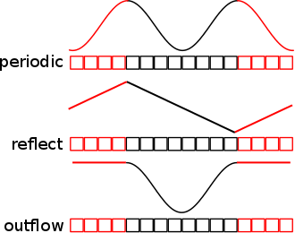

Setting values for grid boundaries¶
Note
At the time of writing of this tutorial (september 2012), only the Athena and Capreole hydrodynamics codes support the user defined boundaries.
In AMUSE, you can specify how a hydrodynamics grid code handles the boundary conditions. Hydrodynamic grid codes define a number of special grid cells at all ends of the grid. These cells are often called boundary or ghost cells and are handled differently by the code. The flow-variables in these cells are not evolved but calculated from other cells or from a user defined function.
Supported boundary conditions¶
Each code in amuse will need to provide at least 3 kinds of boundary conditions:
- periodic
- To simulate periodically repeating problems. Periodic boundary conditions simulates as if the grid is connected to a copy of itself, often implemented by copying over the data at the opposite site of the grid to the boundary cells.
- reflect
- Mirrors all grid variables in the boundary cells, often implemented by copying the data of the cells connected to the boundary into the boundary cells.
- outflow
- Sets the derivative of the flow variables with respect to the direction of the boundary to zero.
The following picture shows all three boundary conditions for a one dimensional grid with 4 boundary cells:
Boundary conditions are defined by setting a boundary parameter for each boundary of the grid of a code. These boundaries are defined:
- xbound1
- The x-axis boundary on the left side of the grid, often called the inflow boundary
- xbound2
- The x-axis boundary on the right side of the grid, often called the outflow boundary
- ybound1
- The y-axis boundary on the bottom side of the grid, often called the inflow boundary
- ybound2
- The y-axis boundary on the top side of the grid, often called the outflow boundary
- zbound1
- The z-axis boundary on the front side of the grid, often called the inflow boundary
- zbound2
- The z-axis boundary on the back side of the grid, often called the outflow boundary
from amuse.lab import *
code = Athena()
code.parameters.xbound1 = "periodic"
code.parameters.ybound1 = "reflect"
You can also set the boundary per axis as an (inflow, outflow) parameter
with the x_, y_, z_boundary_condition parameters:
from amuse.lab import *
code = Athena()
instance.parameters.x_boundary_conditions = ("periodic","periodic")
instance.parameters.y_boundary_conditions = ("periodic","periodic")
instance.parameters.z_boundary_conditions = ("periodic","periodic")
Custom boundary conditions¶
You can specify a custom boundary condition by setting the boundary
condition parameters to interface. After these parameters have
been set and committed you can change the boundary values by filling
in the correct boundary grid. These boundary grids do not overlap
but patch together to form a larger cuboid around the grid cuboid.
The x-boundary conditions have N boundary cells in the x direction
and the same amount of cells in the y and z direction as the grid.
The y-boundary conditions have N boundary cells in the y direction
and in the x direction it has 2 * N + the number of cells in the x
direction of the grid, in the z direction it has the same amount of
cells as the grid. Finally the z-boundary conditions have N boundary
cells in the z direction and in the x and y directions it has 2 * N
+ the number of cells in the x or y direction of the grid.
You can get the boundary grid of a specific boundary by calling get_boundary_grid on the code.
Note
You fill the returned grid by copying over data from a memory grid, as you can only set all attributes of the grid in one go (you cannot set the individual attributes yet at we did not implement the required methods, september 2012)
En example of filling the boundary grid:
from amuse.lab import *
instance=Athena()
instance.parameters.mesh_size = (10 , 20, 10)
instance.parameters.mesh_length = [1.0, 1.0, 1.0] | generic_unit_system.length
instance.parameters.x_boundary_conditions = ("interface", "outflow")
# request the boundary grid
# it will have shape of 4 x 20 x 10 (x, y, z)
# as Athena has a 4 cell boundary depth
xbound1_grid = instance.get_boundary_grid('xbound1')
# copy the grid to memory, so we can manipulate it easier
memxbound1 = xbound1_grid.copy()
# just set all cells in the grid to the same values
memxbound1.rho = 0.02 | density
memxbound1.rhovx = 0.2 | momentum
memxbound1.rhovy = 0.0 | momentum
memxbound1.rhovz = 0.0 | momentum
memxbound1.energy = p / (instance.parameters.gamma - 1)
memxbound1.energy += 0.5 * (
memxbound1.rhovx ** 2 +
memxbound1.rhovy ** 2 +
memxbound1.rhovz ** 2
) / memxbound1.rho
# copy over the data so that the code has the correct
# boundary values
channel = memxbound1.new_channel_to(xbound1_grid)
channel.copy()
A boundary grid connects to the grid in a very specific way. The general rule for the 1 or inflow boundaries is that the last cell of the boundary will connect to the first cell of the grid. The general rule for the 2 or outflow boundaries is that the first cell of the boundary will connect to the last cell of the grid.
For example for xbound1:
- xbound1
- The left, inflow boundary on the x-axis. Will have cells
[0, # boundary cells - 1]in the x direction. The last cell of the boundary will connect to the first cell of the grid. - ybound1.
- The right, outflow boundary on the x-axis. Will have cells
[0, # boundary cells - 1]in the x direction. The first cell of the boundary will connect to the last cell of the grid.
A boundary grid will have correct x, y and z positions that match the grid. So, if a 1D grid starts at 0.0 and the cell size is 1.0, the last grid cell on the left(the inflow boundary) will have position -0.5.
from amuse.lab import *
instance=Athena()
instance.parameters.mesh_size = (10 , 1, 1)
instance.parameters.mesh_length = [1.0, 1.0, 1.0] | generic_unit_system.length
instance.parameters.x_boundary_conditions = ("interface", "interface")
# request the boundary grid on both sides
# it will have shape of 4 x 1 x 1 (x, y, z)
# as Athena has a 4 cell boundary depth
xbound1_grid = instance.get_boundary_grid('xbound1')
xbound2_grid = instance.get_boundary_grid('xbound2')
print xbound1_grid[...,0,0].x
print instance.grid[...,0,0].x
print xbound2_grid[...,0,0].x